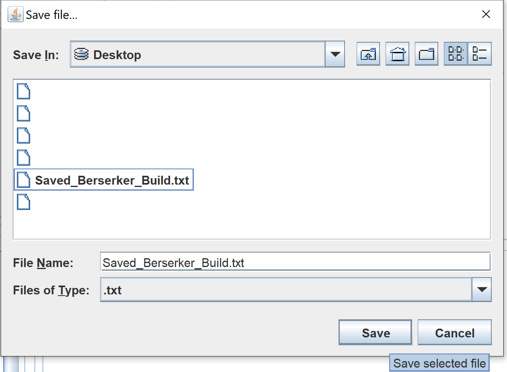

Compreendendo o básico
Conteúdo
❈ Abrir compilações salvas
Para abrir uma compilação salva, o usuário deve ter um arquivo salvo contendo informações sobre um caractere. Este tutorial usará um arquivo chamado "Saved_Berserker_Build.txt". Você pode fazer o download do zip que contém o arquivo de texto no site da Valiant. Baixar: SUN Calc_Tutorial_Berserker Build.zip.
Para abrir uma compilação salva de um arquivo de texto, o usuário precisa ir para Arquivo no canto superior esquerdo e clicar em "Abrir ...".

Outra janela será aberta e solicitará que o usuário selecione um arquivo. Neste exemplo, o tutorial abrirá um arquivo chamado "Saved_Berserker_Build.txt" na área de trabalho.

Clique em "Abrir" quando o usuário selecionar um arquivo. As informações dentro do arquivo serão carregadas na calculadora.

❈ Salvar uma compilação em andamento
Para salvar uma construção, o usuário deve ter selecionado uma classe na barra suspensa na seção "Seleção de classe" antes de continuar neste tutorial. Para descobrir como selecionar uma turma, visite o "Criar Personagem Constrói" tutorial.
Para salvar uma compilação, o usuário deve selecionar Arquivo no canto superior esquerdo e clicar em "Salvar como ...".

Outra janela será aberta e solicitará que o usuário nomeie o arquivo e selecione um diretório para salvar o arquivo. Se o usuário desejar substituir um arquivo existente, vá para o diretório em que o arquivo existe e clique no arquivo de texto disponível. Neste exemplo, o tutorial salvará o arquivo como "Saved_Beserker_Build".

Clique em Salvar e a Calculadora notificará o usuário de que a compilação foi salva no arquivo especificado na caixa "Mensagens do sistema".

❈ Mude o idioma e o tema
NOTA: O aplicativo pode ser alterado para iniciar em um idioma ou tema específico - para isso, o usuário precisa ler a alteração preferências do usuário seção deste tutorial.
Para alterar o idioma, o usuário deve clicar em Idioma na barra de menus na parte superior e selecionar um idioma no menu suspenso.

Para alterar o tema, o usuário deve clicar em Opções na barra de menus na parte superior, rolar sobre Temas e clicar em um tema no menu lateral.

❈ Alterar as preferências do usuário
Para alterar as preferências de inicialização do aplicativo, clique em Opções na barra de menus na parte superior e clique em "Preferências ..." no menu suspenso.

Uma nova janela será exibida e, nessa janela, o usuário poderá alterar qualquer uma das preferências. Clique em "Aplicar" no canto inferior direito da janela e o aplicativo salvará e ajustará suas configurações.

❈ Entre em contato com o suporte
Clique em "Ajuda" na barra de menus na parte superior da janela do aplicativo. No menu suspenso, clique em "Entre em contato com o suporte ...". Isso levará o usuário às principais instalações da Valiant Guild. Endereço Web.

O site será iniciado no navegador padrão no computador do usuário. O site será semelhante à imagem abaixo. Preencha o formulário e clique em enviar".

❈ Verifique manualmente se há atualizações
Clique em "Ajuda" na barra de menus na parte superior do aplicativo e clique em "Verificar atualizações ..." no menu suspenso.

Se for necessária uma atualização, uma janela pop-up será exibida e solicitará que o usuário clique em "Sim" ou "Não". Clicar em "Sim" fará com que o aplicativo seja fechado completamente depois de iniciar o atualizador. Depois que o aplicativo terminar de atualizar, o usuário precisará reiniciar o aplicativo manualmente.

Para confirmar se o aplicativo está atualizado, o usuário pode marcar a caixa "Mensagens do sistema". A figura abaixo mostra quais mensagens devem ser esperadas.